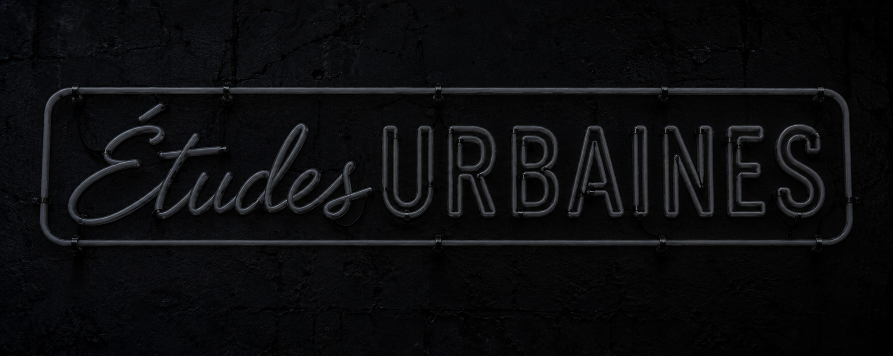
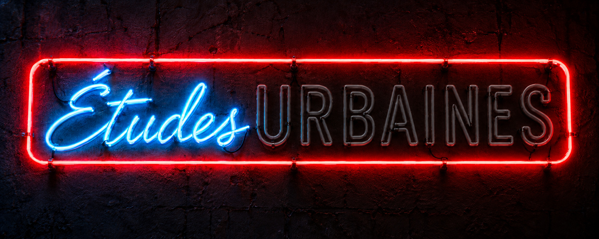
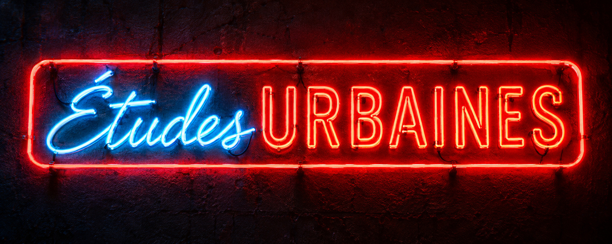

01 / 04 · Барселона
Спасатель 03
Между дежурством и пляжем. Город остаётся в отражении.
Fujicolor DPII Silk · Подпись автора
Два размера ·
Оформление по запросу
5 900 ₽



Загрузка вывески…
Свет выключен.